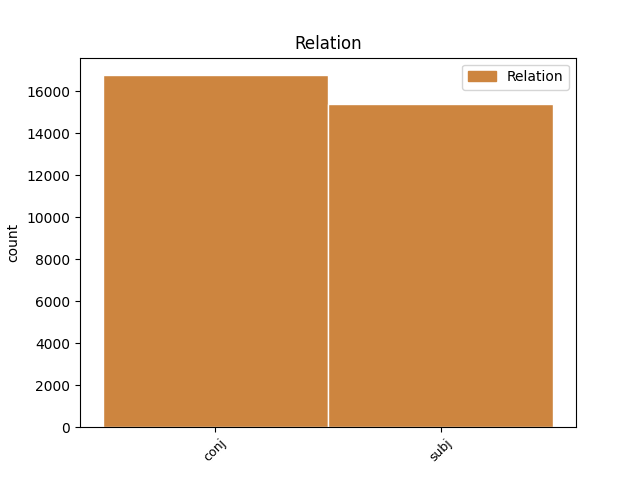
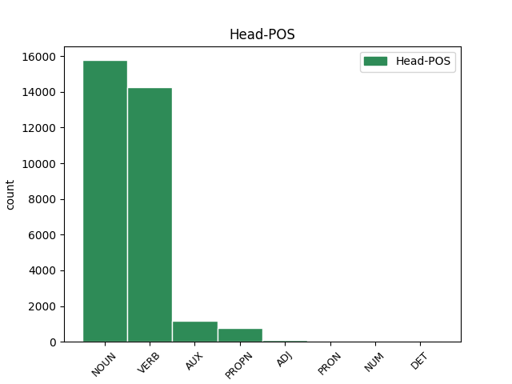
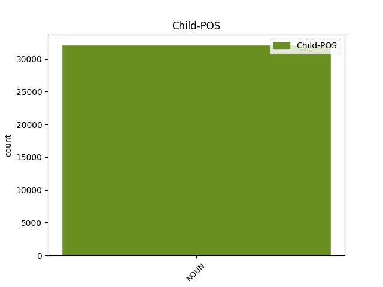

Distribution of features within this leaf



Agreement Rules sorted by frequency.
- When the dependent token is the subject(subj) of the head token, and the dependent token is NOUN.
1 Ze _ _ _ _ 0 _ _ _
2 zcela _ _ _ _ 0 _ _ _
3 nenápadné _ _ _ _ 0 _ _ _
4 astronomicky _ _ _ _ 0 _ _ _
5 poklidné _ _ _ _ 0 _ _ _
6 disciplíny _ _ _ _ 0 _ _ _
7 se _ _ _ _ 0 _ _ _
8 tak _ _ _ _ 0 _ _ _
9 rázem _ _ _ _ 0 _ _ _
10 stalo stát VERB VpNS---XR-AA--- Gender=Neut|Number=Sing|Polarity=Pos|Tense=Past|VerbForm=Part|Voice=Act 0 _ _ _
11 politikum politikum NOUN NNNS1-----A---- Case=Nom|Gender=Neut|Number=Sing|Polarity=Pos 10 subj _ _
12 prvého _ _ _ _ 0 _ _ _
13 řádu _ _ _ _ 0 _ _ _
14 , _ _ _ _ 0 _ _ _
15 kdy _ _ _ _ 0 _ _ _
16 se _ _ _ _ 0 _ _ _
17 v _ _ _ _ 0 _ _ _
18 astronomech _ _ _ _ 0 _ _ _
19 probouzí _ _ _ _ 0 _ _ _
20 " _ _ _ _ 0 _ _ _
21 planetární _ _ _ _ 0 _ _ _
22 ekologický _ _ _ _ 0 _ _ _
23 instinkt _ _ _ _ 0 _ _ _
24 " _ _ _ _ 0 _ _ _
25 ( _ _ _ _ 0 _ _ _
26 nesahejte _ _ _ _ 0 _ _ _
27 nám _ _ _ _ 0 _ _ _
28 na _ _ _ _ 0 _ _ _
29 planetky _ _ _ _ 0 _ _ _
30 : _ _ _ _ 0 _ _ _
31 je _ _ _ _ 0 _ _ _
32 to _ _ _ _ 0 _ _ _
33 neobnovitelné _ _ _ _ 0 _ _ _
34 přírodní _ _ _ _ 0 _ _ _
35 bohatství _ _ _ _ 0 _ _ _
36 ) _ _ _ _ 0 _ _ _
37 , _ _ _ _ 0 _ _ _
38 zatímco _ _ _ _ 0 _ _ _
39 vojenští _ _ _ _ 0 _ _ _
40 experti _ _ _ _ 0 _ _ _
41 cítí _ _ _ _ 0 _ _ _
42 jedinečnou _ _ _ _ 0 _ _ _
43 příležitost _ _ _ _ 0 _ _ _
44 , _ _ _ _ 0 _ _ _
45 jak _ _ _ _ 0 _ _ _
46 protáhnout _ _ _ _ 0 _ _ _
47 strategickou _ _ _ _ 0 _ _ _
48 obrannou _ _ _ _ 0 _ _ _
49 iniciativu _ _ _ _ 0 _ _ _
50 do _ _ _ _ 0 _ _ _
51 21 _ _ _ _ 0 _ _ _
52 . _ _ _ _ 0 _ _ _
53 století _ _ _ _ 0 _ _ _
54 , _ _ _ _ 0 _ _ _
55 a _ _ _ _ 0 _ _ _
56 dokonce _ _ _ _ 0 _ _ _
57 v _ _ _ _ 0 _ _ _
58 ušlechtilém _ _ _ _ 0 _ _ _
59 zájmu _ _ _ _ 0 _ _ _
60 obrany _ _ _ _ 0 _ _ _
61 všeho _ _ _ _ 0 _ _ _
62 lidstva _ _ _ _ 0 _ _ _
63 . _ _ _ _ 0 _ _ _
1 Otec _ _ _ _ 0 _ _ _
2 americké _ _ _ _ 0 _ _ _
3 vodíkové _ _ _ _ 0 _ _ _
4 pumy _ _ _ _ 0 _ _ _
5 Edward _ _ _ _ 0 _ _ _
6 Teller _ _ _ _ 0 _ _ _
7 se _ _ _ _ 0 _ _ _
8 už _ _ _ _ 0 _ _ _
9 nechal _ _ _ _ 0 _ _ _
10 slyšet _ _ _ _ 0 _ _ _
11 , _ _ _ _ 0 _ _ _
12 že _ _ _ _ 0 _ _ _
13 by _ _ _ _ 0 _ _ _
14 se _ _ _ _ 0 _ _ _
15 mohla _ _ _ _ 0 _ _ _
16 vyvinout _ _ _ _ 0 _ _ _
17 kosmická _ _ _ _ 0 _ _ _
18 bomba _ _ _ _ 0 _ _ _
19 na _ _ _ _ 0 _ _ _
20 úrovni _ _ _ _ 0 _ _ _
21 sto _ _ _ _ 0 _ _ _
22 gigatun _ _ _ _ 0 _ _ _
23 ( _ _ _ _ 0 _ _ _
24 ! _ _ _ _ 0 _ _ _
25 ! _ _ _ _ 0 _ _ _
26 ) _ _ _ _ 0 _ _ _
27 TNT _ _ _ _ 0 _ _ _
28 , _ _ _ _ 0 _ _ _
29 což _ _ _ _ 0 _ _ _
30 vyvolalo _ _ _ _ 0 _ _ _
31 zděšení _ _ _ _ 0 _ _ _
32 mezi _ _ _ _ 0 _ _ _
33 astronomy astronom NOUN NNMP7-----A---- Animacy=Anim|Case=Ins|Gender=Masc|Number=Plur|Polarity=Pos 0 _ _ _
34 i _ _ _ _ 0 _ _ _
35 novináři novinář NOUN NNMP7-----A---- Animacy=Anim|Case=Ins|Gender=Masc|Number=Plur|Polarity=Pos 33 conj _ SpaceAfter=No
36 . _ _ _ _ 0 _ _ _
Disagree Examples:
1 Navíc _ _ _ _ 0 _ _ _
2 současně _ _ _ _ 0 _ _ _
3 vznikne _ _ _ _ 0 _ _ _
4 písemný _ _ _ _ 0 _ _ _
5 doklad _ _ _ _ 0 _ _ _
6 , _ _ _ _ 0 _ _ _
7 lze _ _ _ _ 0 _ _ _
8 přenášet _ _ _ _ 0 _ _ _
9 obrázky _ _ _ _ 0 _ _ _
10 , _ _ _ _ 0 _ _ _
11 grafy graf NOUN NNIP4-----A---- Animacy=Inan|Case=Acc|Gender=Masc|Number=Plur|Polarity=Pos 0 _ _ _
12 , _ _ _ _ 0 _ _ _
13 fotografie fotografie NOUN NNFP4-----A---- Case=Acc|Gender=Fem|Number=Plur|Polarity=Pos 11 conj _ SpaceAfter=No
14 , _ _ _ _ 0 _ _ _
15 rukou _ _ _ _ 0 _ _ _
16 psané _ _ _ _ 0 _ _ _
17 texty _ _ _ _ 0 _ _ _
18 apod _ _ _ _ 0 _ _ _
19 . _ _ _ _ 0 _ _ _
1 Navíc _ _ _ _ 0 _ _ _
2 současně _ _ _ _ 0 _ _ _
3 vznikne _ _ _ _ 0 _ _ _
4 písemný _ _ _ _ 0 _ _ _
5 doklad _ _ _ _ 0 _ _ _
6 , _ _ _ _ 0 _ _ _
7 lze _ _ _ _ 0 _ _ _
8 přenášet _ _ _ _ 0 _ _ _
9 obrázky _ _ _ _ 0 _ _ _
10 , _ _ _ _ 0 _ _ _
11 grafy _ _ _ _ 0 _ _ _
12 , _ _ _ _ 0 _ _ _
13 fotografie fotografie NOUN NNFP4-----A---- Case=Acc|Gender=Fem|Number=Plur|Polarity=Pos 0 _ _ _
14 , _ _ _ _ 0 _ _ _
15 rukou _ _ _ _ 0 _ _ _
16 psané _ _ _ _ 0 _ _ _
17 texty text NOUN NNIP4-----A---- Animacy=Inan|Case=Acc|Gender=Masc|Number=Plur|Polarity=Pos 13 conj _ _
18 apod _ _ _ _ 0 _ _ _
19 . _ _ _ _ 0 _ _ _
1 Aby _ _ _ _ 0 _ _ _
2 by _ _ _ _ 0 _ _ _
3 byly _ _ _ _ 0 _ _ _
4 údaje _ _ _ _ 0 _ _ _
5 o _ _ _ _ 0 _ _ _
6 přenosové _ _ _ _ 0 _ _ _
7 rychlosti _ _ _ _ 0 _ _ _
8 objektivně _ _ _ _ 0 _ _ _
9 srovnatelné _ _ _ _ 0 _ _ _
10 , _ _ _ _ 0 _ _ _
11 vydala vydat VERB VpQW---XR-AA--- Aspect=Perf|Gender=Fem,Neut|Number=Plur,Sing|Polarity=Pos|Tense=Past|VerbForm=Part|Voice=Act 0 _ _ _
12 mezinárodní _ _ _ _ 0 _ _ _
13 normalizační _ _ _ _ 0 _ _ _
14 organizace organizace NOUN NNFS1-----A---- Case=Nom|Gender=Fem|Number=Sing|Polarity=Pos 11 subj _ _
15 CCITT _ _ _ _ 0 _ _ _
16 normalizovaný _ _ _ _ 0 _ _ _
17 dopis _ _ _ _ 0 _ _ _
18 na _ _ _ _ 0 _ _ _
19 formátu _ _ _ _ 0 _ _ _
20 A _ _ _ _ 0 _ _ _
21 4 _ _ _ _ 0 _ _ _
22 , _ _ _ _ 0 _ _ _
23 který _ _ _ _ 0 _ _ _
24 se _ _ _ _ 0 _ _ _
25 přenáší _ _ _ _ 0 _ _ _
26 při _ _ _ _ 0 _ _ _
27 laboratorních _ _ _ _ 0 _ _ _
28 zkouškách _ _ _ _ 0 _ _ _
29 nejvyšší _ _ _ _ 0 _ _ _
30 rychlostí _ _ _ _ 0 _ _ _
31 , _ _ _ _ 0 _ _ _
32 jaké _ _ _ _ 0 _ _ _
33 je _ _ _ _ 0 _ _ _
34 přístroj _ _ _ _ 0 _ _ _
35 schopen _ _ _ _ 0 _ _ _
36 . _ _ _ _ 0 _ _ _
1 Pro _ _ _ _ 0 _ _ _
2 některé _ _ _ _ 0 _ _ _
3 skupiny _ _ _ _ 0 _ _ _
4 uživatelů _ _ _ _ 0 _ _ _
5 má _ _ _ _ 0 _ _ _
6 dobrá _ _ _ _ 0 _ _ _
7 kvalita _ _ _ _ 0 _ _ _
8 faxem _ _ _ _ 0 _ _ _
9 zasílaných _ _ _ _ 0 _ _ _
10 fotografií fotografie NOUN NNFP2-----A---- Case=Gen|Gender=Fem|Number=Plur|Polarity=Pos 0 _ _ _
11 , _ _ _ _ 0 _ _ _
12 výkresů výkres NOUN NNIP2-----A---- Animacy=Inan|Case=Gen|Gender=Masc|Number=Plur|Polarity=Pos 10 conj _ _
13 apod _ _ _ _ 0 _ _ _
14 . _ _ _ _ 0 _ _ _
15 značný _ _ _ _ 0 _ _ _
16 význam _ _ _ _ 0 _ _ _
17 . _ _ _ _ 0 _ _ _
1 Stupeň _ _ _ _ 0 _ _ _
2 použité _ _ _ _ 0 _ _ _
3 rozlišovací _ _ _ _ 0 _ _ _
4 schopnosti _ _ _ _ 0 _ _ _
5 výrazně _ _ _ _ 0 _ _ _
6 ovlivňuje _ _ _ _ 0 _ _ _
7 čitelnost _ _ _ _ 0 _ _ _
8 textu text NOUN NNIS2-----A---- Animacy=Inan|Case=Gen|Gender=Masc|Number=Sing|Polarity=Pos 0 _ _ _
9 a _ _ _ _ 0 _ _ _
10 fotografií fotografie NOUN NNFP2-----A---- Case=Gen|Gender=Fem|Number=Plur|Polarity=Pos 8 conj _ SpaceAfter=No
11 , _ _ _ _ 0 _ _ _
12 ale _ _ _ _ 0 _ _ _
13 také _ _ _ _ 0 _ _ _
14 zpomaluje _ _ _ _ 0 _ _ _
15 přenos _ _ _ _ 0 _ _ _
16 . _ _ _ _ 0 _ _ _